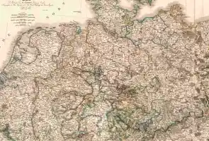
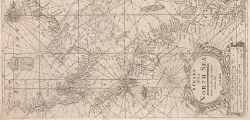

Teil 1: Herrnhut bis Zeist
Teil 2: Nordsee
Teil 3: Ärmelkanal

Teil 4: Atlantik und Nordamerika

How to Use
Mit Voyant Tools stehen vielfältige Analysemöglichkeiten aller Tagebucheinträge (letzte Hand) zur Verfügung. Hier werden eine Word-Cloud der häufigsten vorkommenden Wörter (mit Ausnahme sog. Stopwords wie Konjunktionen, Artikel, Präpositionen usw.) und ein Reader zum linearen Lesen und Durchsuchen des gesamten Tagebuchtextes präsentiert. Hover über den Kopf der Fenster blendet weitere Voyant Tools und Optionen ein.
Weitere Quellen zu den Passagieren
- Amadeus Paulus Thrane 🔗Moravian Lives
- Ferdinand Jacob Dettmers 🔗Moravian Lives
- Johann Arbo 🔗Moravian Lives
- Johann Franz Oberlin 🔗Moravian Lives
- Johann Michael Möhring 🔗Moravian Lives
- David Dietrich Schönberg 🔗Moravian Lives
- Nathanael Seidel 🔗Moravian Lives
- Andreas Langgaard 🔗Moravian Lives
- Anna Münster 🔗Moravian Lives